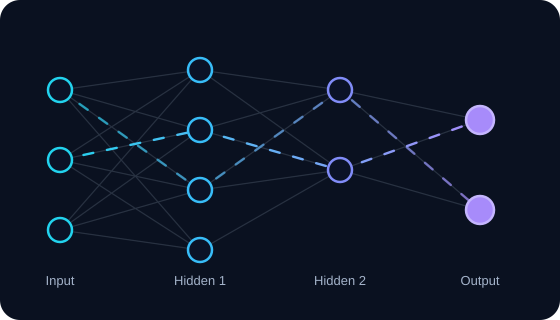

Machine Learning
Instead of following fixed rules, computers study examples and discover patterns on their own — the more data they see, the better they get.
Learn how it learns →From chatbots that write poetry to cars that drive themselves, AI is rewriting the rules of technology. NeuraLab breaks it all down: what AI is, how machines actually "learn", and what it means for all of us.

Almost every AI headline today is powered by one of these three concepts.
Instead of following fixed rules, computers study examples and discover patterns on their own — the more data they see, the better they get.
Learn how it learns →Loosely modelled on the human brain, layers of connected "neurons" process images, speech and text with startling accuracy.
See the network →Large models like chatbots and image generators create new text, pictures, music and code — content that never existed before.
Explore the tools →
Billions of AI-assisted tasks run across the planet every day — translation, mapping, weather forecasts and medical scans.
This robot is drawn entirely in SVG — an image format made of code, animated with pure SVG motion. No JavaScript needed!

A neural network is nothing more than layers of simple math. Numbers go in on the left, get multiplied and combined thousands of times, and an answer comes out on the right — "this photo contains a cat", or "the next word should be 'learning'".
During training the network compares its answer with the correct one and nudges every connection slightly. Repeat that a few million times, and the machine discovers features no human ever programmed into it.
Take the guided tour: the history of AI, its real-world applications, and the big ethical questions it raises.